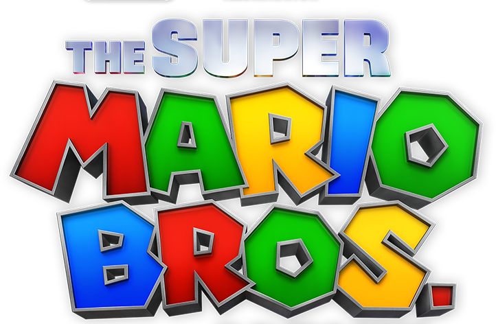

Mario Jump é um jogo de plataforma emocionante que coloca os jogadores no controle do icônico personagem Mario em uma nova aventura cheia de saltos e desafios. Neste jogo, Mario deve evitar obstáculos e inimigos.